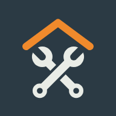

Werkplaatsbord
Storingen melden met foto, per machine, en onderhoud bijhouden.
Je bent uitgenodigd voor de groep
De app zet de groep vanzelf klaar en vraagt daarna alleen je naam. Lukt dat niet (soms op iPhone), vul de code dan zelf in bij Instellingen in de app:
Android (Chrome)
- Open deze pagina in Chrome (niet in WhatsApp: tik op ⋮ en kies Openen in Chrome).
- Tik op Installeer hierboven, of op ⋮ rechtsboven en dan App installeren of Toevoegen aan startscherm.
iPhone (Safari)
- Open deze pagina in Safari.
- Tik op het deel-icoon (vierkantje met pijl omhoog).
- Kies Zet op beginscherm en tik op Voeg toe.
Daarna staat het Werkplaatsbord als app op je telefoon, met het icoon met de sleutels.